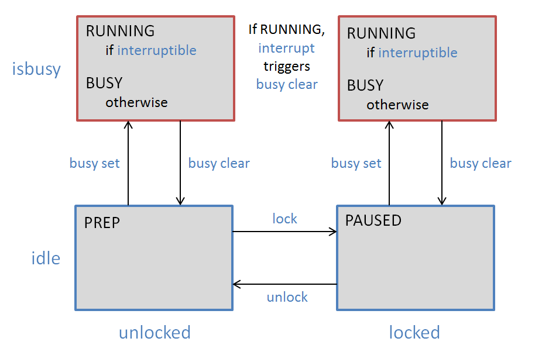

athena(n) -- Athena Scenario Type
package require athena 6.3.3 namespace import ::athena::*
<Create><Destroy>athena(n) is the primary public interface for the athena(n) package. athena(n) is a Snit type whose instances represent entire Athena scenarios. To create a new scenario, possibly loading an .adb file, create an instance of athena(n). In addition, athena(n) provides a number of capabilities that involve analyzing and comparing scenarios.
Instances of athena(n) are thin wrappers around athenadb(n), which is the true main object in the package. athenadb(n) also provides services to internal modules that aren't appropriate for use by clients.
athena(n) defines a state machine to determine what can be done at different times, and more specifically which order(n) orders are available at any given time. The state machine is illustrated in the following diagram (athena(n) subcommands are shown in blue):
First, the scenario may be is locked or is unlocked. While is unlocked, the scenario may be edited freely. When the scenario is locked, the models are initialized and many inputs become frozen until the scenario is unlocked again.
Second, the scenario may be is idle or busy. While it is is idle it is waiting in the event loop for user input. While it is busy, it is performing some long-running task; the user interface might be responsive, but input (i.e., orders) cannot be accepted.
Third, any such task can be is interruptible or non-is interruptible. Interruptible tasks can be terminated in the middle; other tasks must run to completion.
This leads to the following four states:
| State | Description |
|---|---|
| PREP | Scenario preparation. The scenario is idle and is unlocked, and most orders can be used to edit the scenario. |
| PAUSED | The scenario is idle and is locked; simulation time can be advanced. |
| BUSY | The scenario is busy with a non-is interruptible task. |
| RUNNING | The scenario is busy with an is interruptible task. |
The lock state is set using lock and unlock.
The busy state is set using busy, which also indicates whether the task is interruptible or not. At present, is interruptible tasks are terminated by interrupt. Progress in a busy task is indicated to the user via the progress subcommand.
The busy controls are primarily for use internally, but may also be used by the client.
This module defines the following commands:
Creates a new instance of athena(n) called name, which becomes a Tcl command defined in the current scope; athena create returns the fully-qualified form of the name.
The following options may be used:
If the filename isn't the empty string, it specifies the name of an .adb scenario file to load. If the named file cannot be loaded, athena(n) will throw "ATHENA LOAD".
Note that this option is read-only after the object is created.
Specifies the name of log directory; athenadb(n) should create a logger(n) object with this -logdir.
If the object uses background processing, the background thread should use the log directory name created by appending ".bg" to this directory name.
Specifies the subject name used for any notifier(n) events sent by the object. By default, the name defaults to the object's fully-qualified command name.
For example, athena(n) wraps an sqldocument(n) object used to contain the scenario's run-time database (RDB). When monitoring is enabled, the RDB can generate notifier(n) events as tables are updated.
See NOTIFIER EVENTS for more details.
Compares two scenarios (or one scenario with itself at different simulation times) for significant differences, and returns a comparison(n) object containing them.
s1 (and s2 if given) must be an athena(n) scenario object with time advanced. By default, the command compares s1 at time 0 with itself at its latest simulation time. If both scenarios are given, the command compares them at their current simulation times.
Throws ATHENA INCOMPARABLE if the two scenarios cannot reasonably be compared.
The options are as follows:
Each athena(n) instance has the following subcommands:
Advances simulation time, provided that the scenario is locked and is idle. With no options, advances time by one tick.
Throws ATHENA BUSY if the scenario is busy and ATHENA UNLOCKED if the scenario is not is locked.
The options are as follows:
The execution mode: blocking (the default), foreground, or background.
When blocking, the command returns after it has advanced time the specified number of ticks. The time advance is not is interruptible.
When running in the foreground, the command returns after executing one tick. The scenario is busy, and successive ticks are executed in the context of the Tcl event loop. The process is is interruptible, but if the UI will block during each tick.
When running in the background, the scenario is busy and the entire process is handed over to a background thread. Running in the background has a higher start-up and completion cost, but leaves the foreground thread responsive as the process runs. At present, background runs are not is interruptible, though this may change.
Calls a cmd to be called at the end of each simulation time tick. It is called with three arguments: a tag, a tick counter, and the total number of ticks to run. The tick counter runs from 0 to the total number of ticks as time progresses. While time advances, the tag will be RUNNING if the process can be interrupted and BUSY otherwise; and at the end, the cmd will be called once with a tag of COMPLETE.
By advance automatically updates the progress as time advances. If the caller wishes to manage the progress itself, the -tickcmd can return "NO_PROGRESS".
This command manages the scenario's "busy" state. When the scenario is undertaking some long-running task in the context of the event loop, it will mark itself is busy; this prevents orders from being accepted and the scenario from being changed until the task is complete. It has the following subcommands:
Sets the busy state. The busytext is a brief statement of the task, e.g., "Running until 2014W01" or "Wizard". If the pausecmd is given, it is a command to call to pause or interrupt the task; the task is then is interruptible by the interrupt order. Otherwise, the task is not interruptible and must run to completion.
While the scenario is busy, the task will often use progress to keep the user informed as to its progress.
Sends out a sequence of notifier events to the client, to be used to refresh the client when the scenario changes, i.e., after a load or reset.
The sequence is <PreSync>, <Sync>,
<Time>, and <State>.
See NOTIFIER EVENTS for
more about the notifier events sent by the library.
If Tk is loaded, then this command is used to pop up Tk order dialogs. If Tk is not loaded, it throws an error. The options are as follows:
This ensemble gives access to the scenario's executive interpreter, which executes commands and scripts in the context of the scenario. See the executive(n) man page for details about the executive.
Further, the application can add its own commands to the executive by defining an -executivecmd.
Returns 1 if the predicate is true and 0 otherwise. The valid predicates are as follows:
Loads the scenario from the named *.adb file into this scenario object, throwing away any previous data. The scenario must be is idle. Afterwards, the scenario will be locked or unlocked depending on the loaded data.
If the client depends on NOTIFIER EVENTS to keep its user interface in sync with the scenario, it should call dbsync after calling load.
Throws ATHENA BUSY if the scenario is busy, and ATHENA LOAD if the scenario file could not be loaded.
Reloads the scenario from a temporary file. When running tasks in the background, athena(n) saves the scenario to a temporary file, which is given to the background thread. The background thread does its work and saves the results to the temporary file, which is then reloaded by the main thread. The savetemp command is used to save the temporary file, and this command is used to load it again.
If the client depends on NOTIFIER EVENTS to keep its user interface in sync with the scenario, it should call dbsync after calling load.
Locks the scenario, if the scenario is idle and is unlocked and canlock. The simulation time can only be advanced while the scenario is locked.
Throws ATHENA BUSY if the scenario is busy, and ATHENA NOTSANE if the scenario fails its on-lock sanity check.
Pastes copied items into scenario, where the subcommand determines the kind of item to paste. In each case, the paste is done as a sequence of grouped orders, and will be undone and redone as a group.
Each subcommand defines its own notion of a copy set, a set of one or more items to paste. For each of the existing subcommands, a copy set is a list of copied beans, each copied using the bean(n) copydata command.
The available subcommands are as follows:
Sets and queries the current progress value. Progress is set while the scenario is busy; see busy set. The value may take three forms:
| Topic | Description |
|---|---|
| The user is in control of the scenario. This would be the case when the scenario is idle and it is busy with something like a wizard GUI, where normal order entry is suspended until the wizard is closed. | |
| The scenario is performing a task of indefinite length, and no actual progress can be reported until it is done. | |
| A completion fraction from 0.0 to 1.0. |
TBD: It might also be good to have a mode for tasks where the duration cannot be estimated, but many messages are received from the task code. This would allow a ttk::progressbar to be animated by the receipt of these messages instead of automatically, which would give the user more feedback.
Evaluates an SQL query with respect to the scenario's run-time database, and returns the result set as a formatted string. The query can contain any valid SQL statements understood by SQLite3, but in practice it will be a single statement that returns a result set (i.e., SELECT or certain PRAGMA statements). Queries that attempt to write to the RDB will be rejected.
The following options may be used:
Specifies the output mode; the default is mc, multicolumn.
When -mode is mc, each record is output on a single line. Fields are formatted in columns, with the field name as the column header.
When -mode is list, the output is a list of records. Each record is output on multiple lines, with (nominally) one line per field. Each line consists of the field name and value; the record's field names are values are formatted neatly in parallel columns.
When -mode is csv, the output is in CSV (comma-separated value) format, one record per line, beginning with a header record of column labels. Non-numeric values are enclosed in double-quotes.
When -mode is json, the output is a JSON list of objects, one object per row.
Sets the maximum column width, in characters, when -mode is mc; the default is 30. All data values longer than this will be truncated with "...".
If -maxcolwidth is set to 0 then values will not be truncated.
Resets the scenario back to its initial empty state. It will be is idle and unlocked.
If the client depends on NOTIFIER EVENTS to keep its user interface in sync with the scenario, it should call dbsync after calling load.
Throws ATHENA BUSY if the scenario is busy.
Performs an "on-lock" sanity check, determining whether or not the scenario can be locked so that time can advance. Returns a list of two items, {severity, flist}, where severity is one of OK, WARNING, or ERROR. In the latter two cases, the flist is a list of sanity check failure records, each of which identifies a problem and the entity which has it. Entities are identified by their qualified entity IDs (QIDs).
If the severity is ERROR, then there are problems that must be fixed before the scenario is locked. If the severity is WARNING, then the problems are with entities (e.g., CURSEs or IOMs) that are not currently in use by any tactic, and hence cannot affect any results; the scenario may be locked and time may be advanced.
Saves the scenario to disk as an .adb file called filename, adding the ".adb" extension if necessary. If no filename is given but the adbfile name is known, the adbfile name is used. The scenario is marked saved.
On failure, throws "ATHENA SAVE".
Unlocks the scenario, if the scenario is idle and is locked. The scenario can only be edited while it is unlocked.
Throws ATHENA BUSY if the scenario is busy.
athena(n) defines many SQL functions for use in database queries. The functions are TBD.
athena(n) and its subcomponents send notifier(n) events. Top-level events are sent by the -subject indicated when the instance is created. Individual subcomponents can also send events; in this case, the notifier(n) subject is "subject.component". If the -subject is "::adb", for example, the order flunky component sends events as "::adb.flunky".
TBD: This section should document all notifier events sent by athena(n), including those by subcomponents.
<Create><Destroy>Will Duquette
New package derived from Athena internals.
athena 6.3.3 Man page generated by manpage(n) on Fri Nov 20 09:48:55 PST 2015